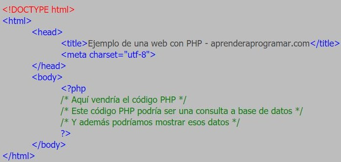

Por: Nereida Soriano Aguiñaga 4°F
PHP es un lenguaje de código abierto muy popular, adecuado para desarrollo web y que puede ser incrustado en HTML. Es popular porque un gran número de páginas y portales web están creadas con PHP. Código abierto significa que es de uso libre y gratuito para todos los programadores que quieran usarlo. Incrustado en HTML significa que en un mismo archivo vamos a poder combinar código PHP con código HTML, siguiendo unas reglas.
PHP se utiliza para generar páginas web dinámicas. Recordar que llamamos página estática a aquella cuyos contenidos permanecen siempre igual, mientras que llamamos páginas dinámicas a aquellas cuyo contenido no es el mismo siempre. Por ejemplo, los contenidos pueden cambiar en base a los cambios que haya en una base de datos, de búsquedas o aportaciones de los usuarios, etc.
 PHP es un lenguaje potente de alto nivel cuyo código podemos introducir en páginas web HTML. PHP se ejecuta en el servidor (no podemos ejecutarlo en nuestro ordenador a no ser que lo hagamos funcionar como servidor). PHP, una vez es interpretado por el servidor, genera una salida HTML que permite visualizar los resultados en los navegadores. Este curso permite aprender los fundamentos para la creación de páginas web usando PHP.
PHP es un lenguaje potente de alto nivel cuyo código podemos introducir en páginas web HTML. PHP se ejecuta en el servidor (no podemos ejecutarlo en nuestro ordenador a no ser que lo hagamos funcionar como servidor). PHP, una vez es interpretado por el servidor, genera una salida HTML que permite visualizar los resultados en los navegadores. Este curso permite aprender los fundamentos para la creación de páginas web usando PHP.
 Los requisitos indispensables para poder escribir y crear páginas PHP son los siguientes:
Los requisitos indispensables para poder escribir y crear páginas PHP son los siguientes:
1.- Disponer de un editor de textos con el que escribir el código de la página PHP. Por ejemplo el Notepad++ es más que suficiente (el “Bloc de notas” de Windows también valdría pero es mucho más limitado).
En vez de un editor de textos podríamos usar un programa más avanzado (entorno de desarrollo), pero en este curso vamos a centrarnos en el manejo básico de PHP, por lo que utilizaremos un editor de textos.
2.- Un servidor dónde nuestras páginas PHP sean interpretadas y devueltas después de dicha interpretación.
3.- Una base de datos donde guardaremos, recuperaremos y consultaremos nuestros datos.
4.- Un navegador web, como por ejemplo Google Chrome. Puede valer cualquier otro como Mozilla Firefox, Internet Explorer, Safari, etc.
 En este código podemos identificar los siguientes elementos:
- La primera línea es una etiqueta relativa a la versión/variante de HTML que declaramos usar. Esta primera etiqueta no es estrictamente necesaria. Sirve únicamente para indicar qué estándar de HTML es el que declaramos usar.
- Las etiquetas de apertura y cierre de html que delimitan el código HTML.
- Las etiquetas de apertura y cierre head que delimitan la cabecera del código HTML.
- Las etiquetas body que delimitan el cuerpo del código HTML y que es donde suele ir el contenido central de un documento HTML (texto, imágenes, formularios, etc.).
- Dentro de las etiquetas body, además de código HTML, podemos tener código PHP embebido. En este caso hemos incluido únicamente un fragmento de código PHP, pero en el cuerpo del documento HTML podríamos incluir diversos fragmentos de código HTML mezclados con diversos fragmentos de código PHP. Cada fragmento de código PHP tiene que ir escrito con sus delimitadores.